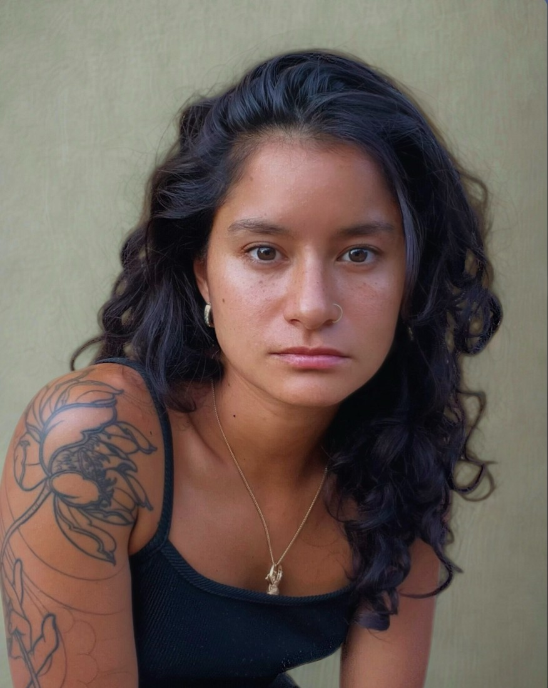

Alionka Houl · Accompagnement individuelTu cuisines maison, tu fais attention à la qualité de ce que tu manges. Alors pourquoi es-tu toujours ballonnée, fatiguée ou préoccupée par ton poids ?
Réserver notre échangeMaster en nutrition · 3 ans en R&D agroalimentaire · Auteure de Nutrition Antifragile
Ça fait des années que tu testes des choses pensées pour tout le monde : régimes, protocoles, conseils contradictoires.
Parfois, ça fonctionne. Quelques semaines. Puis les mêmes difficultés reviennent.
Alors tu cherches encore. Tu supprimes un aliment, tu ajoutes une nouvelle règle, tu remets tes habitudes en question.
Tu voulais prendre soin de ta santé. Et voilà que ton alimentation prend une place folle dans ta tête.
Mais à force de chercher ce qu’il faudrait encore changer, est-ce que tu as vraiment pris le temps de comprendre ce qui se passe chez toi ?
Comprendre avant d’agir.
La nutrition moderne a tendance à traiter chaque problème séparément : la digestion, le poids, la fatigue, le sommeil…
Or, ton corps ne fonctionne pas en compartiments indépendants.
Une santé durable ne se construit pas en additionnant des solutions isolées, mais en comprenant les interactions qui façonnent ton équilibre.
C’est sur cette vision que repose mon accompagnement.
On part de ton quotidien, de tes habitudes et de tes observations pour identifier les leviers pertinents, sans t’imposer un protocole supplémentaire.
Ici, c’est la stratégie qui s’adapte à toi. Pas l’inverse.
Elle voulait reprendre le contrôle de son alimentation, sans retomber dans les mêmes automatismes. Son accompagnement a commencé par un travail sur son quotidien, son environnement et ses habitudes.
Entre ballonnements, fatigue et conseils contradictoires, elle ne savait plus vraiment quoi manger ni quoi supprimer.
Elle enchaînait les méthodes qu’elle parvenait à suivre quelques semaines, avant de revenir à ses anciennes habitudes.
Alionka Houl
Titulaire d’un master en nutrition, j’ai travaillé trois ans en recherche et développement dans l’industrie agroalimentaire.
Cette expérience m’a amenée à questionner les discours nutritionnels, les croyances alimentaires et la manière dont nous avons appris à prendre soin de notre santé.
J’en ai fait un livre : Nutrition Antifragile.
Aujourd’hui, j’accompagne des femmes qui ont accumulé beaucoup de connaissances sur la nutrition, mais qui continuent de se sentir perdues face à leur propre corps.
Mon objectif n’est pas de t’apprendre à suivre davantage de règles, mais de t’aider à comprendre ton corps pour construire tes propres repères.
Je comprends cette appréhension. Quand tu as déjà consacré autant de temps, d’énergie et parfois d’argent à chercher des solutions, tu n’as pas envie de recommencer pour être encore déçue.
Mais il y a une différence entre avoir essayé beaucoup de choses et avoir réellement compris pourquoi elles n’ont pas fonctionné.
C’est justement là que nous commençons : comprendre ce qui entretient tes difficultés, avant de chercher une nouvelle solution.
De ce que tu vis aujourd’hui, de ce que tu as déjà essayé et de ce que tu aimerais voir changer. Je prendrai le temps de comprendre ton parcours, puis nous verrons si ma façon de travailler peut te correspondre.
Notre échange est avant tout l'occasion de faire le point sur ta situation, de répondre à tes questions et de voir ensemble si mon accompagnement correspond à ce dont tu as besoin aujourd'hui.
On échange sur ta situation, ce que tu as déjà essayé et ce que tu aimerais changer.
Si mon approche correspond à tes besoins, je t’explique comment nous pourrions travailler ensemble.
Une question avant de réserver ? Écris-moi sur Instagram.
Tu préfères commencer par découvrir ma vision ? Lis Nutrition Antifragile.